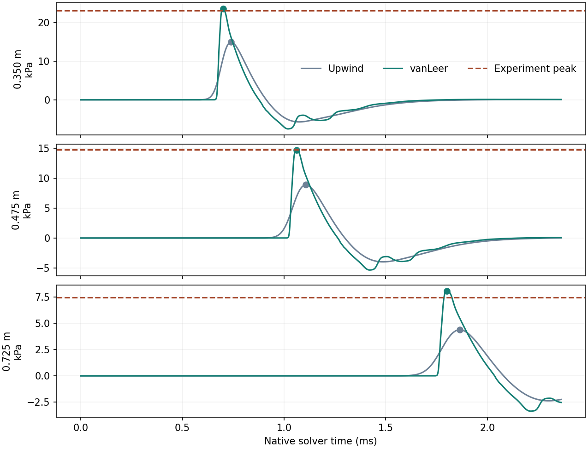

共同观测窗为 0–2.363 ms。逐点暂算 APE 仅用于已出现内部峰值并回落的记录。完整 0–3 ms 的交付和正式 MAPE 待终态。
限幅作业三点暂算峰值 MAPE 对实测为 3.40%，对论文数值为 13.46%。三点均纳入。迎风基线使用串行，限幅对照使用 8 个 MPI 进程。
同窗迎风基线三点暂算 MAPE 对实测为 38.77%，对论文数值为 32.58%。
迎风基线触及调度时限，压力记录止于 2.914 ms，交付未完成。基线固定窗口评分回执 · 调度终态
| 固定半径 | 实测 kPa | 论文 kPa | 迎风基线 8952323 | 限幅重构 8953576 | ||||
|---|---|---|---|---|---|---|---|---|
| 峰值 kPa | 实测 APE | 论文 APE | 峰值 kPa | 实测 APE | 论文 APE | |||
| 0.350 m | 23.08 | 20.57 | 14.95 | 35.20% | 27.29% | 23.57 | 2.12% | 14.58% |
| 0.475 m | 14.74 | 13.05 | 8.88 | 39.74% | 31.98% | 14.70 | 0.25% | 12.60% |
| 0.725 m | 7.48 | 7.12 | 4.38 | 41.38% | 38.47% | 8.06 | 7.83% | 13.19% |

论文图 6.7 · 固定工况与改动 · 逐点复算和文件哈希 · 限幅作业原生压力记录